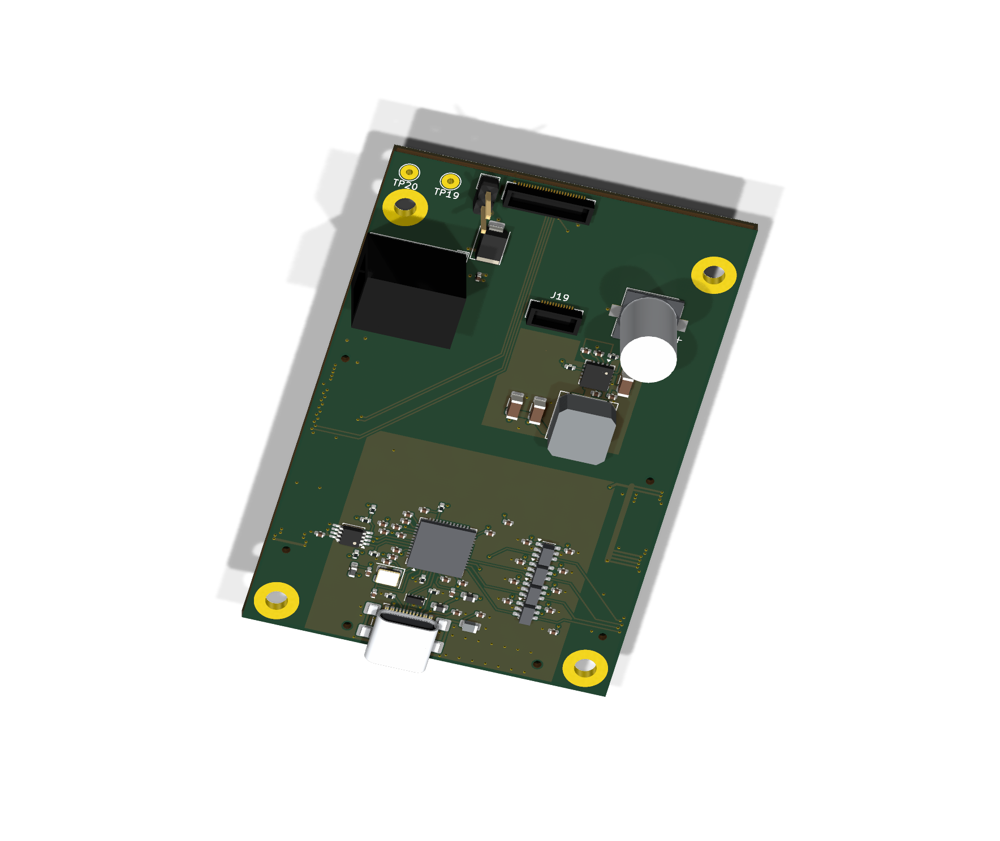

Connectors and power
MC1–MC3 connect to the XEM8305. J1/J19 face the LDO board underneath. The edge-facing barrel input supplies 12 V to the XEM and the 3.3 V converter; the converter supplies the LDO/ASIC assembly.
9 October 2026 · current carrier review
The same 53 × 83 mm carrier, with clean ASIC signal bundles, six copper layers and USB-C JTAG at the lower edge. All 75 fitted components are represented in the 3D views.

R11 · underside 3D · 75 component bodies · Open full image ↗Zoom +/− · drag to pan
MC1–MC3 connect to the XEM8305. J1/J19 face the LDO board underneath. The edge-facing barrel input supplies 12 V to the XEM and the 3.3 V converter; the converter supplies the LDO/ASIC assembly.
Six layers separate signal routing, power and two DGND reference planes. The original form factor and R10 ASIC signal routes are retained. The mounting rings and TP19/TP20 are intentionally bare copper.
The native BRK8305 KiCad circuit was compared component by component: all 50 fitted JTAG positions and their connections are accounted for. C522, FB503 and C528 restore the reference shield filter and additional bypass.
The edge-facing USB socket is a deliberate mechanical adaptation. The EEPROM still needs programming and a hardware check in Vivado. Static PCB checks pass; powered operation, timing and assembled fit remain to be verified.
Open the R11 one-page schematic · Revision and check summary · Visual sources and hashes
These are CAD-rendered review views. Package representations are simplified where needed; they are not photographs or proof of mating clearance. Native R11 PCB checks report zero violations, opens and schematic-parity findings under the retained settings. This is not a fabrication release.
R11 visuals are current. The published R5 native CAD and four-layer Gerbers remain a separate earlier delivery; they do not match this six-layer revision.